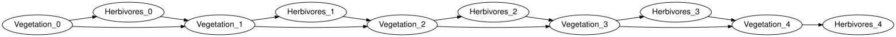
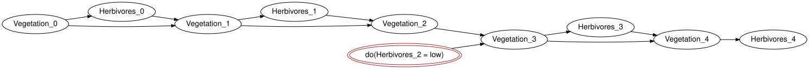

Dynamic models and the roadmap
Simon Frost
- Overview
- Setup
- Unrolling
- Intervening in one slice
- Management as an exogenous input
- Roadmap
- Summary
- References
Overview
Ecological feedback is a cycle: vegetation feeds herbivores and herbivores eat vegetation. A Bayesian network cannot hold a cycle, but a dynamic Bayesian network can, by placing the two halves of the loop in different time slices (SPEC section 43): Vegetation_t -> Herbivores_t within a slice and Herbivores_{t-1} -> Vegetation_t across slices. BayesianNetworks.jl represents such a model as a template that unroll compiles, for any finite horizon, into an ordinary closed network, so that everything in the earlier vignettes applies unchanged. This vignette runs the vegetation-herbivore example, intervenes in one slice, and closes with the roadmap for dynamic influence diagrams and spatial models (SPEC section 44 and 47).
Feedback over time is the limitation most often raised against Bayesian belief networks in ecology (Uusitalo 2007; Landuyt et al. 2013), and the reason given when a network is judged to have underperformed against data (Death et al. 2015); unrolling a template is the standard answer, and the one taken here.
Setup
using EcologicalBayesianNetworks
using BayesianNetworks
using BayesianNetworkInference
dm = vegetation_herbivore_model()
dbn = template(dm)
current_variables(dbn), lagged_variables(dbn), lags(dbn)([:Vegetation, :Herbivores], [Symbol("Vegetation[t-1]"), Symbol("Herbivores[t-1]")], 1)The transition kernel of Vegetation reads its own previous state and the previous herbivore level: vegetation recovers when herbivores are few and declines when they are many (outputs-first layout: (Vegetation, Vegetation[t-1], Herbivores[t-1])).
round.(kernel(dm, :Vegetation).table; digits = 2)2×2×2 Array{Float64, 3}:
[:, :, 1] =
0.5 0.1
0.5 0.9
[:, :, 2] =
0.8 0.4
0.2 0.6Unrolling
unroll(dm, h) builds the closed model over slices 0, ..., h, copying the kernels into every slice; the result validates like any other model.
um = unroll(dm, 4)
validate(um; closed = true, unique_names = true, semantics = true)
variable_names(syntax(um))10-element Vector{Symbol}:
:Vegetation_0
:Herbivores_0
:Vegetation_1
:Herbivores_1
:Vegetation_2
:Herbivores_2
:Vegetation_3
:Herbivores_3
:Vegetation_4
:Herbivores_4to_graphviz(um; rankdir = "LR", states = false)
rollout gives the marginal of a variable in every slice: the loop settles towards a stationary distribution.
rv = rollout(um, :Vegetation)
rh = rollout(um, :Herbivores)
fmt(x) = lpad(string(round(x; digits = 4)), 8)
println(" t P(Vegetation = dense) P(Herbivores = high)")
for t in 0:horizon(syntax(um))
println(lpad(t, 2), " ", lpad(fmt(rv[t + 1].table[2]), 21), " ", lpad(fmt(rh[t + 1].table[2]), 20))
end t P(Vegetation = dense) P(Herbivores = high)
0 0.6 0.54
1 0.578 0.5312
2 0.5718 0.5287
3 0.5701 0.528
4 0.5696 0.5279Intervening in one slice
A cull at time 2, do(Herbivores_2 = low), is a local rewrite of the unrolled network: the mechanism of that one variable becomes a point mass. Earlier slices are untouched and later ones respond; observing the same event would also move the earlier slices.
umi = do_intervention(um, :Herbivores_2 => :low)
rvi = rollout(umi, :Vegetation)
rvo = rollout(observe(um, :Herbivores_2 => :low), :Vegetation)
println(" t P(dense) do(Herbivores_2 = low) Herbivores_2 = low observed")
for t in 0:4
println(lpad(t, 2), " ", fmt(rv[t + 1].table[2]), " ", lpad(fmt(rvi[t + 1].table[2]), 22), " ",
lpad(fmt(rvo[t + 1].table[2]), 27))
end t P(dense) do(Herbivores_2 = low) Herbivores_2 = low observed
0 0.6 0.6 0.584
1 0.578 0.578 0.52
2 0.5718 0.5718 0.364
3 0.5701 0.7287 0.6456
4 0.5696 0.614 0.5908to_graphviz(umi; rankdir = "LR", states = false)
rollout enumerates the joint, which is fine for five slices. For long horizons the unrolled model is simply a large network and BayesianNetworkInference.posterior answers by variable elimination: a 40-slice horizon has 82 variables, and once the code is compiled (the first call below) a query takes a fraction of a second.
um40 = unroll(dm, 40)
posterior(um40, :Vegetation_40)
t = @elapsed p = posterior(um40, :Vegetation_40)
p, round(t; digits = 3)(Dict(:sparse => 0.43055555555555547, :dense => 0.5694444444444444), 0.001)posterior(do_intervention(um40, :Herbivores_20 => :low), :Vegetation_21)Dict{Symbol, Float64} with 2 entries:
:sparse => 0.272222
:dense => 0.727778Management as an exogenous input
vegetation_herbivore_model(management = true) adds an exogenous Management variable (none, cull) to every slice, feeding the herbivore mechanism. This is the dynamic analogue of the implementation chain of the Direct intervention vs imperfect implementation vignette: the action lives in the model as a variable that a policy could set.
umm = unroll(vegetation_herbivore_model(management = true), 4)
(baseline = round.(marginal(umm, :Vegetation_4).table; digits = 4),
cull_at_2 = round.(marginal(do_intervention(umm, :Management_2 => :cull), :Vegetation_4).table; digits = 4))(baseline = [0.4089, 0.5911], cull_at_2 = [0.3911, 0.6089])Roadmap
- Dynamic influence diagrams (SPEC section 44). A repeated decision
D_t : I_t -> A_twith per-slice utilitiesu_t(X_t, A_t)is an influence diagram over the unrolled network: theManagement_tvariables above become decisions with information sets drawn from the observed slices, and utilities attach toVegetation_t. Finite-horizon unrolling reusesInfluenceDiagrams.optimizeas it stands; the decision variable elimination already handles several ordered decisions (the Koalas network of the Song Sparrow decision network vignette has two). Stationary or infinite-horizon policies are out of scope for version 0.1. - Spatial models (SPEC section 47). Sites are slices of a different kind: a template network per site, glued along shared variables (a regional climate, dispersal between neighbours) with the open-network composition of
BayesianNetworks.jl, exactly asunrollglues consecutive time slices. Nothing new is needed in the semantics; the work is in the builders and in inference on the larger networks, where the junction-tree backend ofBayesianNetworkInference.jlapplies. - Zoo growth. More BNMA records (BNMA 2026) under CC BY as their converter is exercised, the remaining fetch-only models flipped to verbatim wherever the licence allows, and provenance (SPEC section 49) attached to every loaded model.
Summary
A dynamic Bayesian network is a template plus a horizon: unroll compiles it into an ordinary closed network, so inference, intervention and composition all apply unchanged, and an intervention in one slice is an intervention on that slice’s variable only. That is the whole of the dynamic story for version 0.1; dynamic influence diagrams and spatial models are sketched above and are the next things to build. The last vignette, Held-out validation on a penguin network, scores a published network against data it was not fitted on.
References
BNMA. 2026. The Bayesian Network Model Archive. https://bnma.co/bnrepo/.
Death, Russell G., Fiona Death, Rachel Stubbington, Michael K. Joy, and Marjan van den Belt. 2015. “How Good Are Bayesian Belief Networks for Environmental Management? A Test with Data from an Agricultural River Catchment.” Freshwater Biology 60 (11): 2297–309. https://doi.org/10.1111/fwb.12655.
Landuyt, Dries, Steven Broekx, Rob D’hondt, Guy Engelen, Joris Aertsens, and Peter L. M. Goethals. 2013. “A Review of Bayesian Belief Networks in Ecosystem Service Modelling.” Environmental Modelling & Software 46: 1–11. https://doi.org/10.1016/j.envsoft.2013.03.017.
Uusitalo, Laura. 2007. “Advantages and Challenges of Bayesian Networks in Environmental Modelling.” Ecological Modelling 203 (3–4): 312–18. https://doi.org/10.1016/j.ecolmodel.2006.11.018.